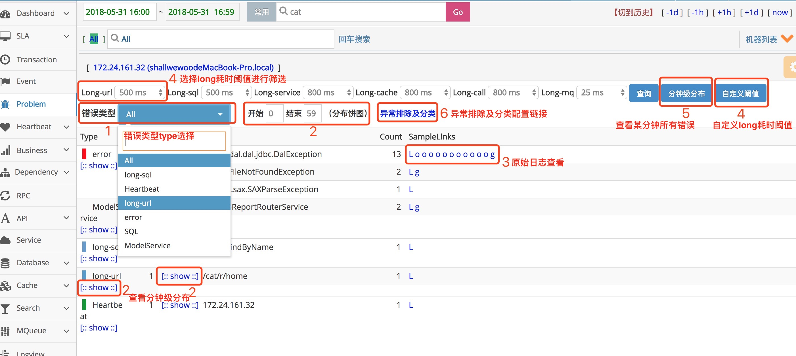
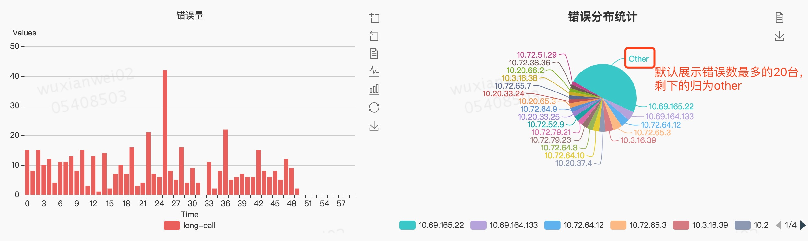
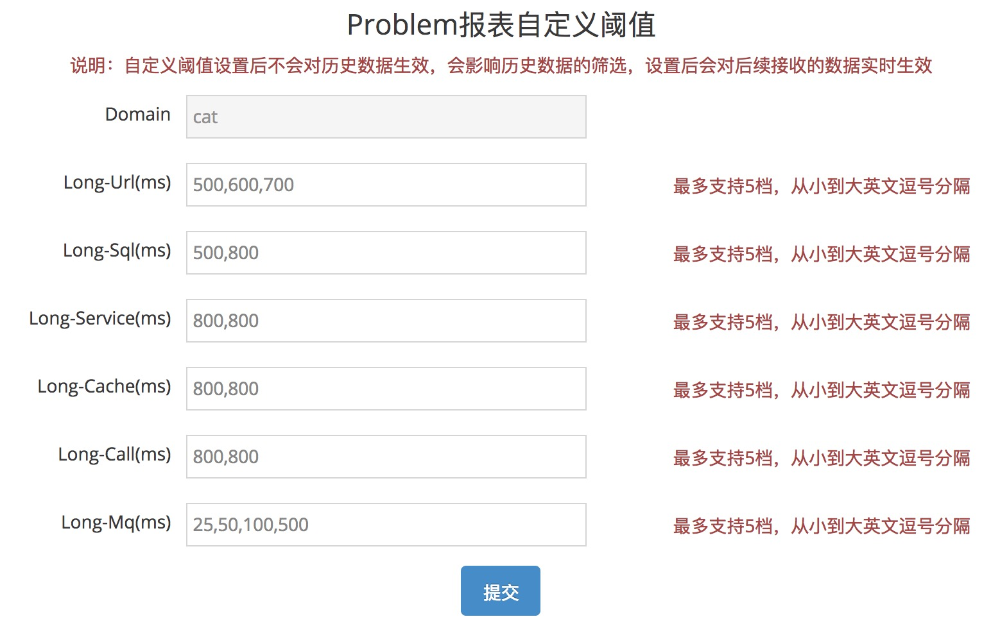

Problem报表
主要功能
Problem记录整个项目在运行过程中出现的问题，包括一些异常、错误、访问较长的行为。Problem报表是由logview存在的特征整合而成，方便用户定位问题。
来源：
- 业务代码显示调用Cat.logError(e) API进行埋点，具体埋点说明可查看埋点文档。
- 与LOG集成，会捕获log日志中有异常堆栈的exception日志。
报表介绍

- All为展示所有错误，也可选择某一个错误类型type展示。
- 点击type和status的show，分别展示type和status的分钟级错误数分布： 
- 原始日志查看里一般会有出错的整个链路及错误堆栈，这里默认展示60条log。
- 对于较长耗时，也认为是problem错误，cat已经接入公司绝大多数组件，现支持url、sql等，可以选择不同的耗时阈值。点击“自定义阈值”，可以对耗时阈值分阶段。
 - 分钟级分布可以查看某一分钟的所有错误分布统计